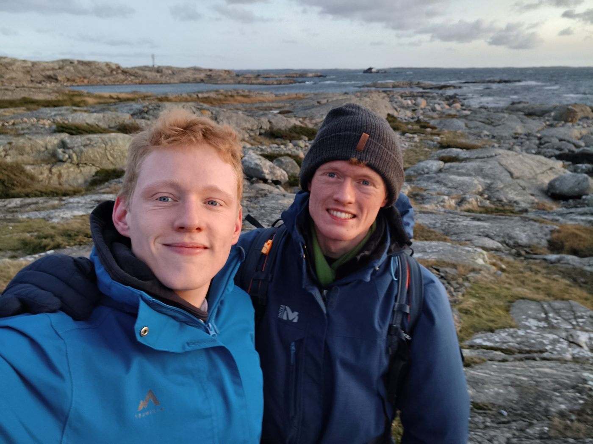

About me
Hi everyone, I am a physics master’s student at the University of Heidelberg!

Projects
-
Master’s thesis In progress
“Unveiling hyperluminous quasars around cosmic noon using Gaia DR3 XP and SPHEREx spectra”
-
Bachelor’s thesis
“Passively Evolving Galaxies in the Vicinity of the Quasar APM 08279+5255 at Redshift z = 3.9”
Research interests
My particular interest lies in investigating dynamic processes in active galactic nuclei and the formation and evolution of (super-) massive black holes, approached from both observational and theoretical perspectives.
I am especially fascinated by the role of extreme objects, such as quasars, in cosmic structure formation and galaxy evolution.
Skills
- German · native
- English · fluent, C1
- French · intermediate, B1
- Python
- C++
- ADQL
- TOPCAT
- Source Extractor
- Triathlon
- Bouldering
Regular voluntary work as a lifeguard team leader and instructor at the Baltic Sea; swimming coach with DLRG Nottuln and DLRG Dossenheim for over 10 years.